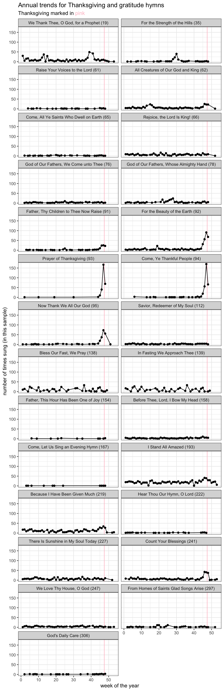
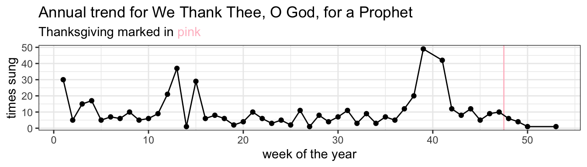
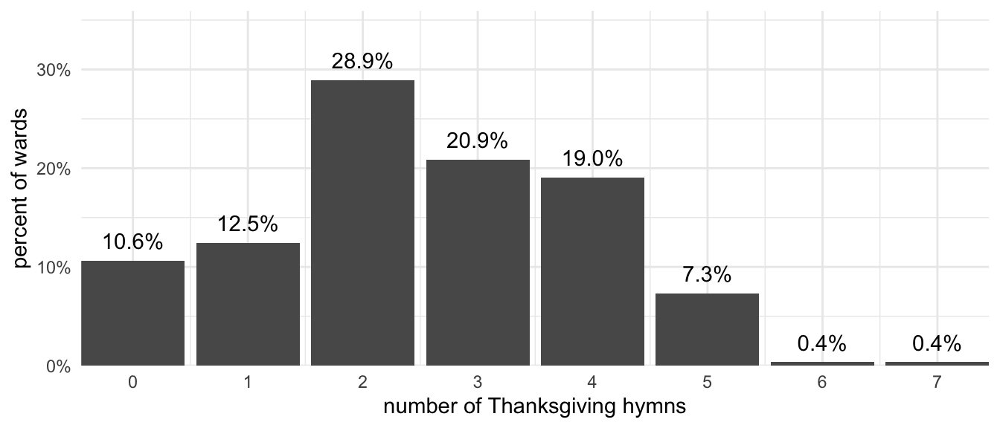
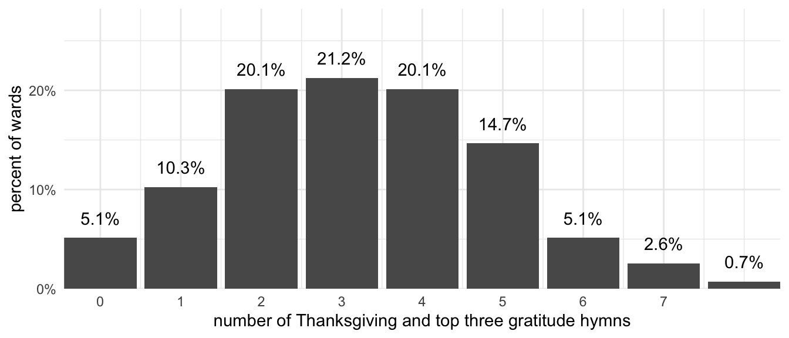
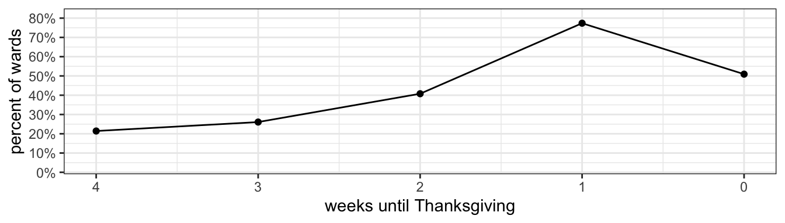
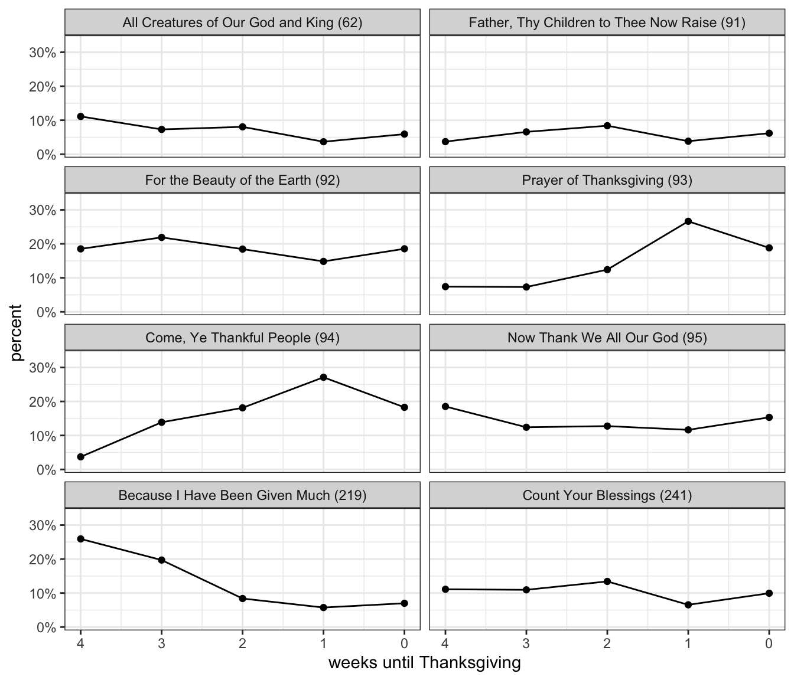

What hymns are sung around Thanksgiving?
holidays
frequency
Thanksgiving in the United States is coming up, and many wards sing hymns to reflect the season. What hymns are sung around Thanksgiving? When does the Thanksgiving season start? What trends are there within Thanksgiving? In this post, I’ll only look at the hymns that come from wards in the United States, which is about 84% of the full dataset.
What are the Thanksgiving hymns?
The Table of Contents in the front of the hymnal doesn’t have a dedicated section for Thanksgiving, but there is a “Praise and Thanksgiving” section, which includes hymns 62–96. In my mind though, the unofficial list of Thanksgiving hymns are hymns 91 through 95. This checks out with the “Thanksgiving” entry in the Topics index. The Topics index also recommends looking at the “Gratitude” entry, which lists an additional 22 hymns. So, the question then is this: what hymns are actually sung around Thanksgiving?
Let’s take a look at what is sung in November in the United States. Figure 1 shows the hymns that are the most common in November. As expected, the five “Thanksgiving” hymns (hymns 91–95), which are highlighted in red, are on this list. We also see two other hymns that are about gratitude,
Stats for nerds :)
These eight hymns shown in Figure 1 are not only the most frequent hymns in November generally, but they’re also eight of the nine whose increased frequency in November is statistically significant. For each hymn, I ran a \(\chi^2\) test comparing how often it occurs in November to the other 11 months of the year. A sample table for
| Hymn 94 | All other hymns | |
|---|---|---|
| Number of times sung in November | 243 | 5778 |
| Number of times not sung in November | 33 | 59243 |
The \(\chi^2\) suggests that the association between Hymn 94 and being sung in November is statistically significant (\(\chi^2\) = 2047.811, df = 1, \(p\) < 0.001).
However, I had to do that for all 242 hymns that were ever sung in November in this sample. So, to avoid the potential of false positives when running that many independent tests, I decided to do a Bonferroni correction, so only hymns that had a p-value less than \(0.001 / 242\) ≈ 0.00000413 were considered statistically significant. I know Bonferroni is known to be a bit harsh of a penalty, but in this case it seems to work well.
(I’ll be honest, I’m not sure if \(\chi^2\)-tests should be done with the sample size is so large or if they’re so disproportionate. Please let me know if there’s a different test I could use!)
What is very interesting to me is that one other hymn stood out as being sung statistically significantly more in November than in the rest of the year:
For what it’s worth, I’ve excluded sacrament hymns in Figure 1 and I will for the rest of this blog post. One reason is because they distract from the real patterns that occur.
Just to show that the other 19 hymns listed in the “Gratitude” entry in the back of the hymnal were not popular around Thanksgiving, let’s look at how often each of the 27 total hymns we’ve discussed so far are sung throughout the year. Figure 2 shows this data. From left to right (within each panel), we have the first week of the year to the last week of the year. Higher points on the plot mean the hymn was sung more that week. Each of the 22 gratitude and Thanksgiving hymns is in its own panel, in order of hymn number. I’ve put a pink line where Thanksgiving typically falls in the year to give a point of reference.

Figure 2 makes it pretty clear that hymns 91–95 really are mostly sung in November and really not very often outside of November. The others that made the cut as being Thanksgiving hymns have a burst of currency in November, but not quite as large.
Looking at this plot, I’ll speculate a little bit about what goes on in music coordinators’ heads as they decide what hymns to sing. If they’re familiar with the hymnal already, they may knows that hymns 91–95 are Thanksgiving hymns. They choose one of those, except maybe
I’ll end this section with an observation that

Recommendation to music coordinators
Try singing
How many Thanksgiving hymns do wards sing in November?
Going back to Figure 1, we see that
So the question then is this: how many wards sing at least one of these five (or eight) Thanksgiving songs in November? For this question, I’ll only draw from the wards that have contributed data from the entire month of November for a given year. I currently have 206 Novembers worth of data from 110 different wards.
Focusing on the five prototypical Thanksgiving hymns (hymns 91–95), Figure 4 shows how many of them a ward is likely to sing in November. The most common scenario (a little less than a third of the wards) is that only two of them are sung. But, a fair number of wards sing three or four of them. Less common is one or even all five. To my surprise, 11.7% of wards in the US don’t sing any of these Thanksgiving hymns in November. But that means that 88.3% of wards do, which is a lot. And, yes, there were two wards that had more than five. One ward in 2016 sang

Let’s do the exact same thing, but include the three “honorary mention” Thanksgiving hymns (

Patterns within the Thanksgiving “season”
Now that we’ve seen what hymns are considered Thanksgiving hymns and how many are sung each year in a ward, let’s dive a little deeper into November and see if we can uncover some more patterns.
Figure 6 below shows the within-November trends for each of these eight Thanksgiving hymns. This is basically Figure 2 above but zoomed in to just show four weeks and just these eight hymns. There are a few small changes though. First, rather than group the data by week of the year, I’ve grouped the data by the number of Sundays leading up to Thanksgiving. So, the Sunday before Thanksgiving would be 1, the second Sunday before Thanksgiving, would be 2, and so on. The Sunday after Thanksgiving (which will be treated separately in its own blog post) is a 0. Second, rather than show the raw count of how many wards have sung that hymn (which is an arbitrary number dependent on how much data I have), I’ve shown what percentage of the time that particular hymn is sung per week. In other words, the totals within each panel of Figure 6 add up to 100%.
In this figure, we can see some pretty interesting trends. First off, each of these eight hymns were sung by at least one ward in each month of November. In other words, there are no gaps in the data. Second, we see that almost all hymns peak the Sunday before Thanksgiving. This is especially true of the more popular hymns (hymns 92–95), but also applies to 91 and 219. In two cases,
The issue with this plot is that there’s a confounding factor: how likely Thanksgiving hymns are sung within November. The reason why most of the hymns spike the Sunday before Thanksgiving is simply because that’s when Thanksgiving hymns are most likely to be sung. Figure 7 shows what percentage of US wards sing at least one Thanksgiving hymn by week leading up to Thanksgiving. Unsurprisingly, the Sunday before Thanksgiving is the most common time to sing any of these hymns. So, it makes sense then that, for any Thanksgiving hymn, the most common week to sing it is the Sunday before Thanksgiving.

So, perhaps a better way to look at the data is to change the percentages. Figure 8 shows the same data as Figure 6, but instead of the data within each panel adding up to 100%, the data within each week (4 weeks before, 3 weeks before, etc) add up to 100% across all eight panels. So, the way you interpret this is that given all the Thanksgiving hymns sung, for example, four weeks before Thanksgiving, a quarter of them will be

So here, we see some, in my opinion, more interesting trends. Some hymns, like
To be clear, the raw numbers in Figure 6 show an increase through the month, but here we’re focused on how often a hymn is selected, given that it’s one of these eight hymns being sung, per week. I don’t know, I think this plot shows a more accurate picture of my intuition.
This chart reveals some additional insight into how music coordinators choose hymns. You’re not likely to sing any one of these Thanksgiving hymns more than once in the Thanksgiving “season.” So, the music coordinator is left to decide which hymns to choose and when to sing them during the month. We already saw in Figure 7 that these hymns are more common the closer it is to Thanksgiving and that most wards sing maybe 2–4 of these. So, let’s say a ward ends up with four of them. Well they can’t sing them all in one week, so one of them will be pushed to the week prior. Which hymn does the music coordinator choose? I think what people think is that they don’t want to “waste” the “good” hymn on an earlier week. Or rather, they save the “best” hymns for the preferred weeks. So, the “throwaway” hymns like
I think these patterns feed into each other. How does a music coordinator know which hymns are “best”? Experience in the church and general intuition is helpful, I think words like Thanksgiving and Thankful that line up with the name of the holiday are almost guarenteed to make them quintessential. Imagine if there were a hymn that had the word “Valentine” in it, I think it’d be sung the week before Valentine’s Day a lot had hardly ever any other week! So when a hymn becomes strongly associated with a holiday, they’re likely to sing it the week prior to that holiday and not choose it any other week of the year, which is what we see in Figure 2 with the annual trends for all hymns. The less quintessential ones are more flexible.
Another potential factor that I haven’t mentioned at all is that there is more to a sacrament meeting besides when in the year it happens. The topic of a particular sacrament meeting can often have a strong effect on what hymns are being sung. If topics are more or less random across wards, the topic-specific effects will cancel each other out. However, topics are often chosen based on proximity to holidays, and while I don’t have the data to show this, I would suspect that many sacrament meetings in November are on the topic of Gratitude. So, especially earlier in the month when Thanksgiving itself is less on people’s minds, a more general gratitude-related hymn is selected. But, the point I’m trying to make is that both sacrament meeting topics and hymns are often chosen because of holidays and they mutually reinforce each other to create these November-specific patterns discussed on this page.
Patterns within Sacrament Meeting
I’ll end this post with a look into patterns within Sacrament Meeting itself. Are these hymns likely to be sung as opening hymns, intermediate hymns, or closing hymns? Figure 9 shows the eight Thanksgiving hymns and how often they occured within sacrament meeting. The totals in each panel add up to 100%.
It seems like each hymn has its own story. Some hymns are most often sung as opening hymns, like
Conclusion
In the United States, there are eight hymns that are sung mostly around Thanksgiving. The majority of wards sing between two and four of these hymns per year, but some sing as many as seven and others sing none at all. The Thanksgiving season starts in November and you’re more likely to sing Thanksgiving hymns the closer you are to the holiday itself. The most “Thanksgivingy” hymns are most likely right before Thanksgiving. Some hymns are more commonly sung as opening hymns, but other hymns have their own patterns. Clearly, there is a lot that can be uncovered by just looking at hymns in November!